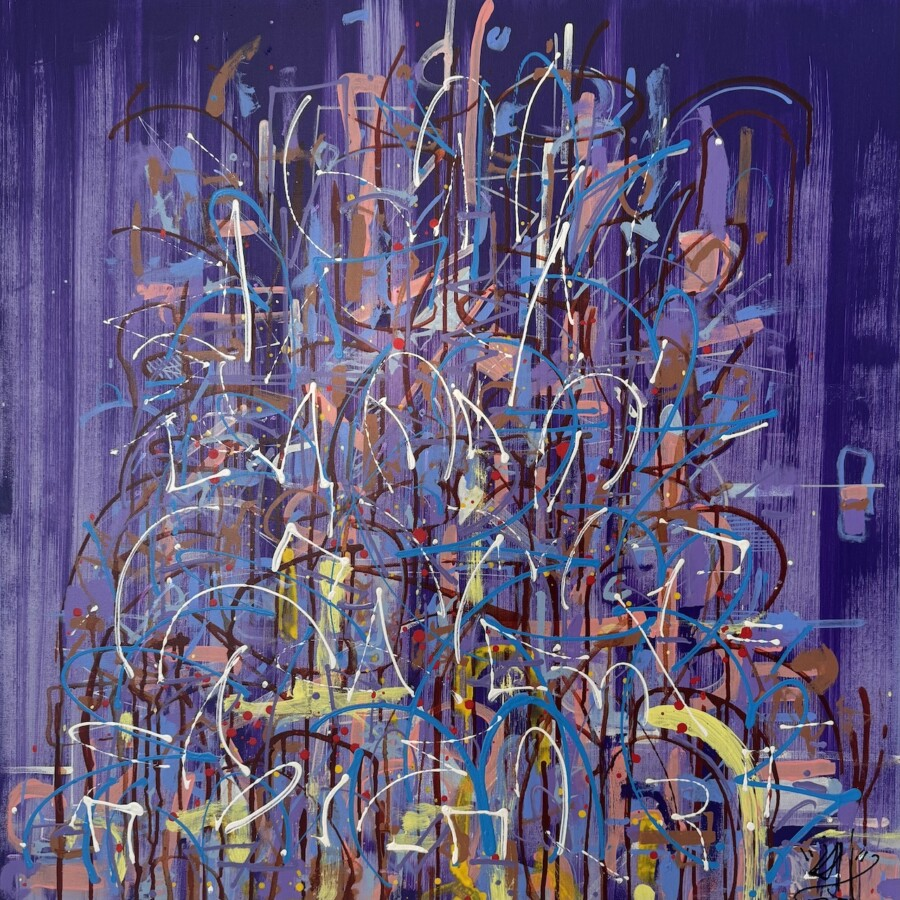

Waves: Up From Here
Waves: Up From Here is an art exhibition inspired by the acclaimed Los Angeles trio, Moonchild’s latest emotionally raw album, Waves, released in collaboration with ONErpm. Delving into themes on relationships, fear, grief, resilience, healing and self-worth, the album evokes an overall mood of transcendence and stepping into one’s own power. The album’s fourth track, Up From Here, played a meaningful role in the curatorial process, as its themes of self-awareness, reflection and resilience influenced the direction of the artwork. Waves: Up From Here features work by Braimah Lawal, Cydney M. Lewis, Fontaine Scarelli, Ish Muhammad, Jamiah Calvin, Ravi Arupa and Sally Ko and is curated by Kimberly Leja Atwood, Director of Elephant Room Gallery in Chicago. Melding various mediums, color palettes and styles, the pieces in this exhibition share a common thread that is all about the mood of the music found in Waves.
Waves: Up From Here opens with a reception on Saturday, March 14th from 12 to 3pm at Beverly Phono Mart’s pop up space located at 1802 W 103rd St. in Chicago. Moonchild will be on site for a vinyl signing, Meet & Greet and Q&A starting at 1pm. The art exhibition will be on view through April 25th. Moonchild’s ‘Waves’ releases on February 20th and album collaborators include Jill Scott, Rapsody, Astyn Turr, D. Smoke, Robert Glasper, PJ Morton, Chris Dave, Gretchen Parlato, Dayna Stephens, Elena Pinderhughes, Erin Bentlage, Lalah Hathaway, Rae Khalil, Brittney Carter and Christie Dashiell. The band is playing two shows in Chicago on March 13th and 14th at Thalia Hall. More information regarding open hours can be found on Beverly Phono Mart’s website: www.beverlyphonomart.com and information on the art exhibition can be found on Elephant Room Gallery’s website: www.elephantroomgallery.com